Education

I studied in Korrnell since I was 5 years old. I stayed in Korrnell till 5th grade. During those 7 years, I learned a lot and understand many things. I have many friends in Korrnell, because there were 30 people in each clasa, and there were 5 to 7 classes. That was definetly many people. My friends and classmates are fun, they always many so many things to chat and play. I was class representative when I was in first grade and third grade, and I also got a "best-student-model" when I was in first grade. I loved to go to school because I liked to chat with my classmates. We also have a long break around 10am. During that break time, me and my friends would run out as fast as we can to play the seesaw and other equipments at the playground. My elementary and kindergarten life was fun, there were no pressure on academic. However, I transferred to PAS when I was in fifth grade.
 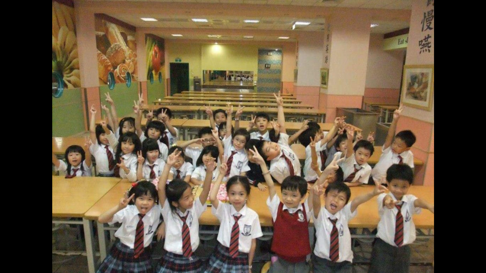
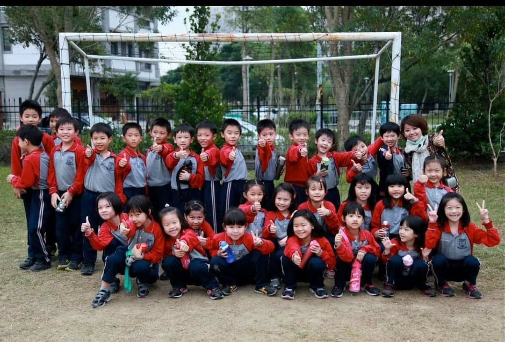
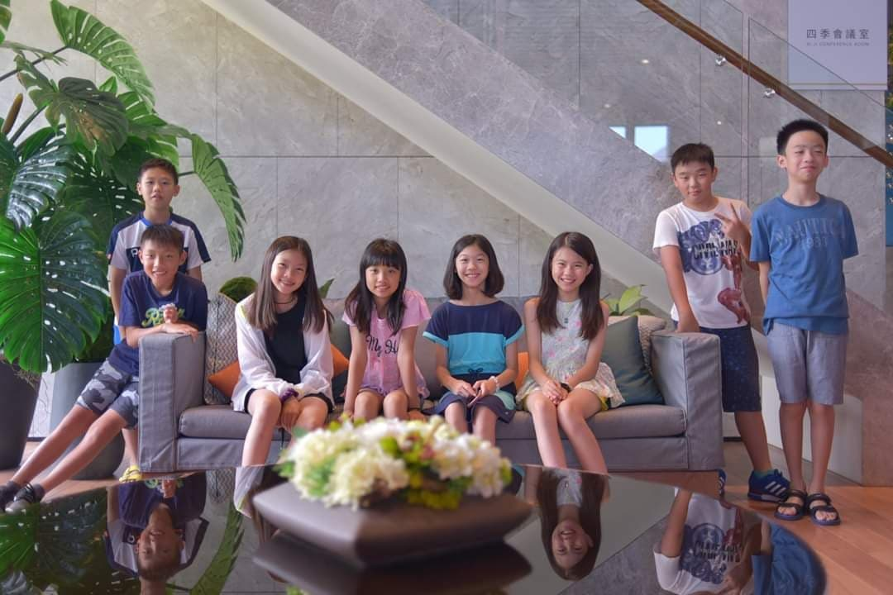
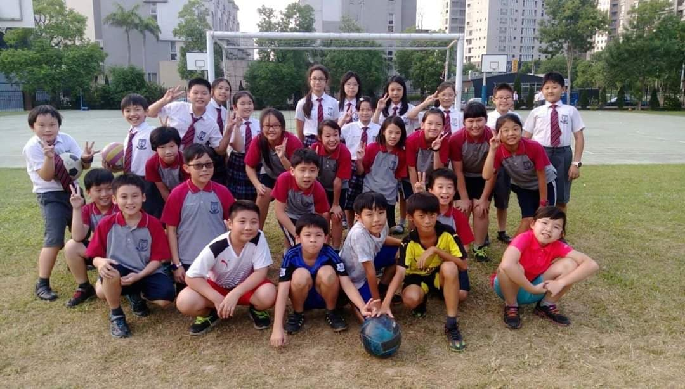
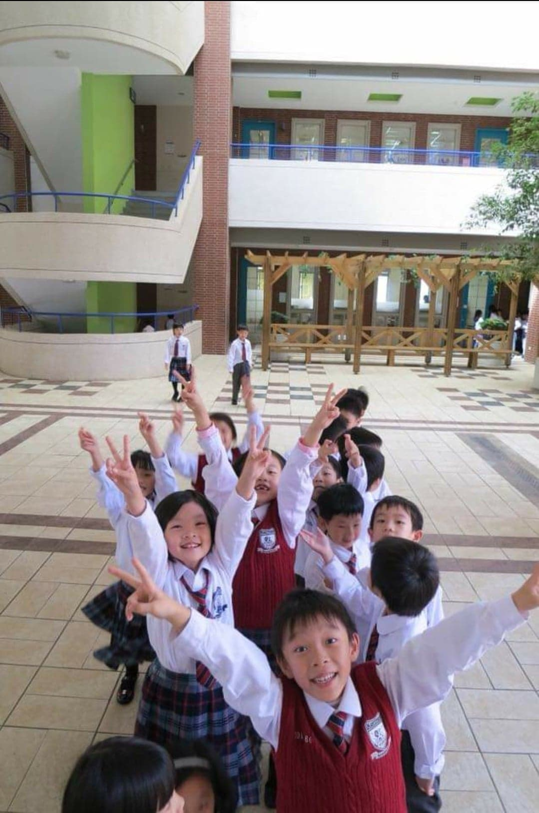
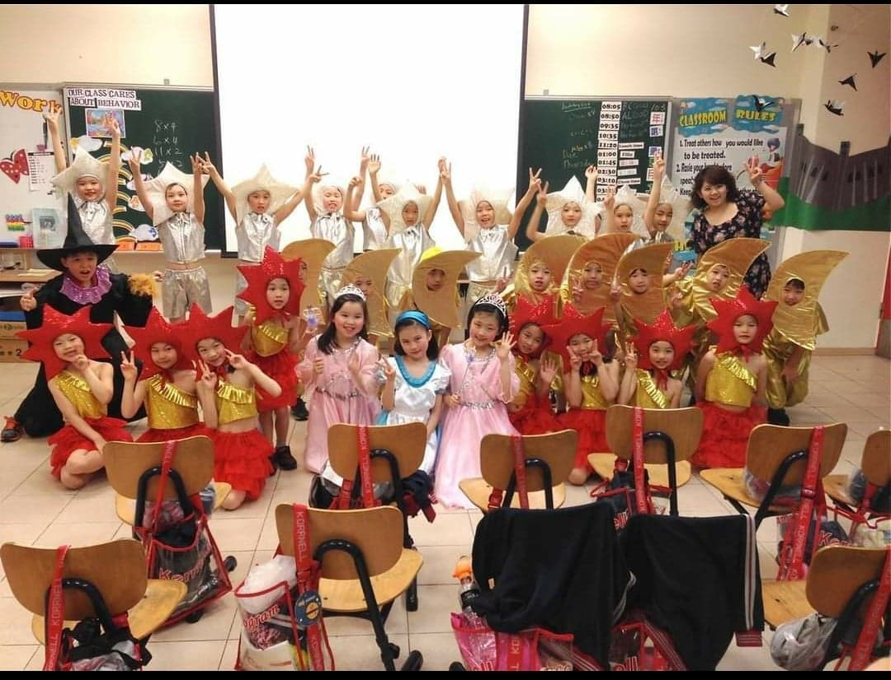
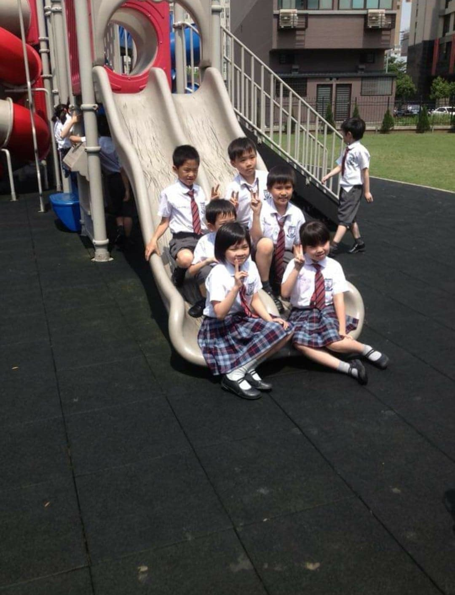
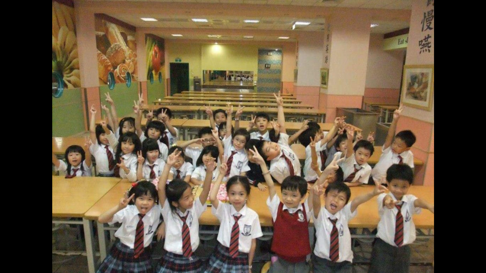
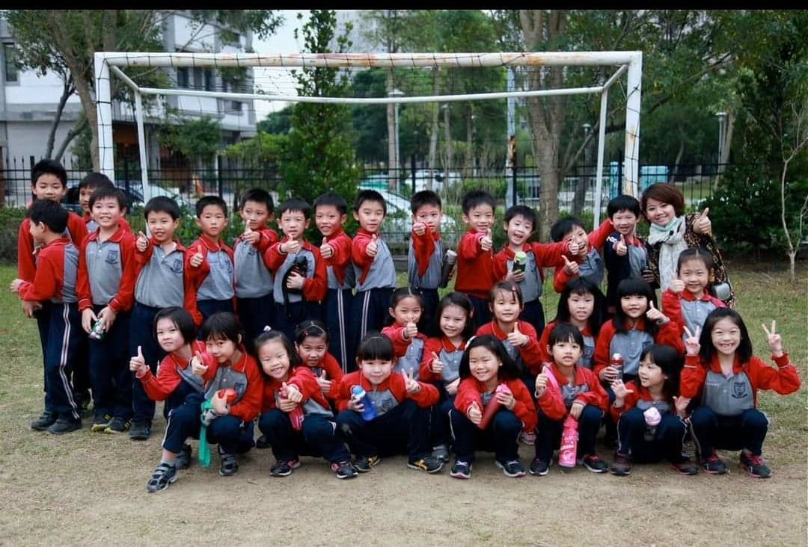
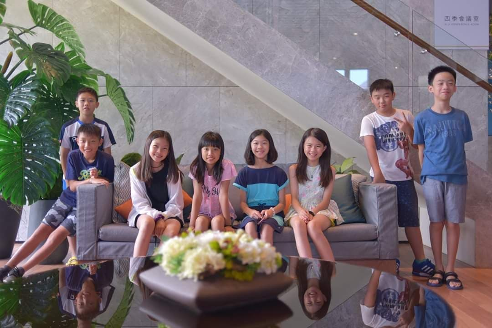
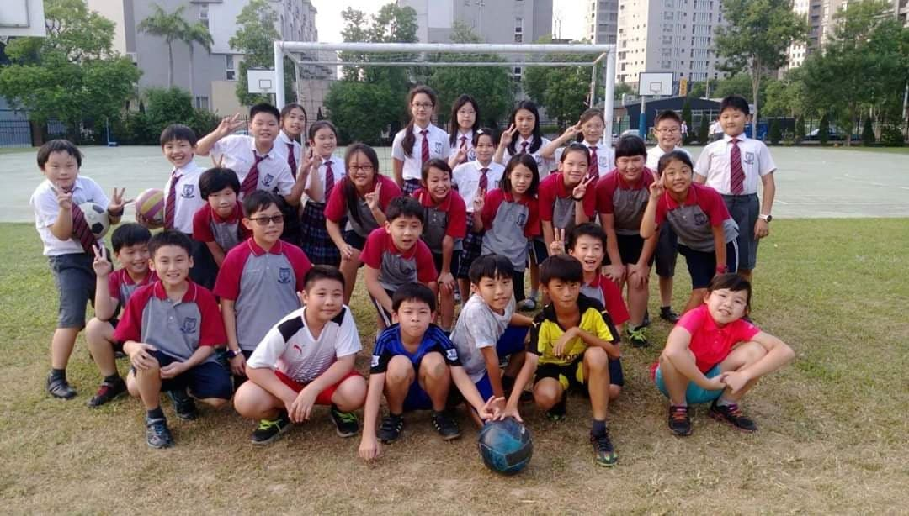
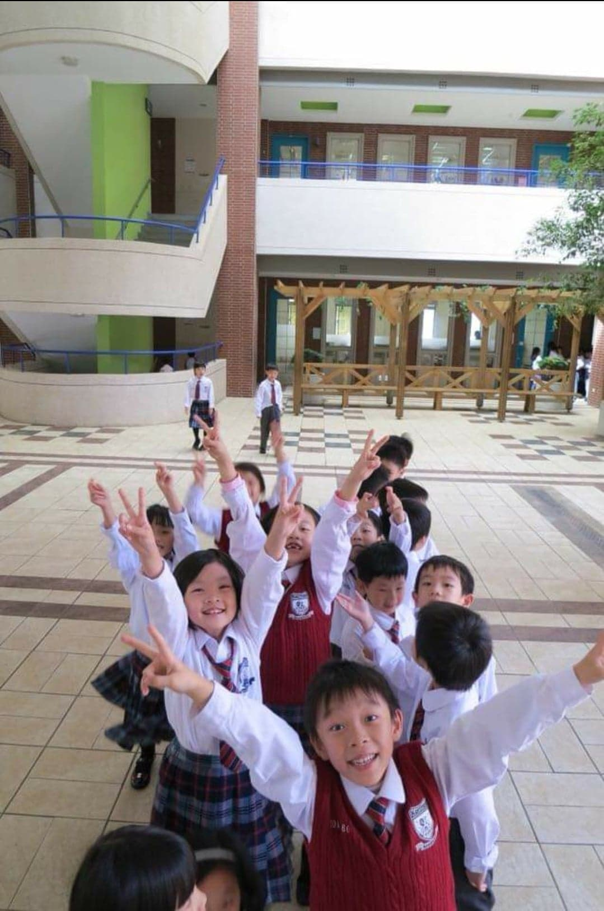
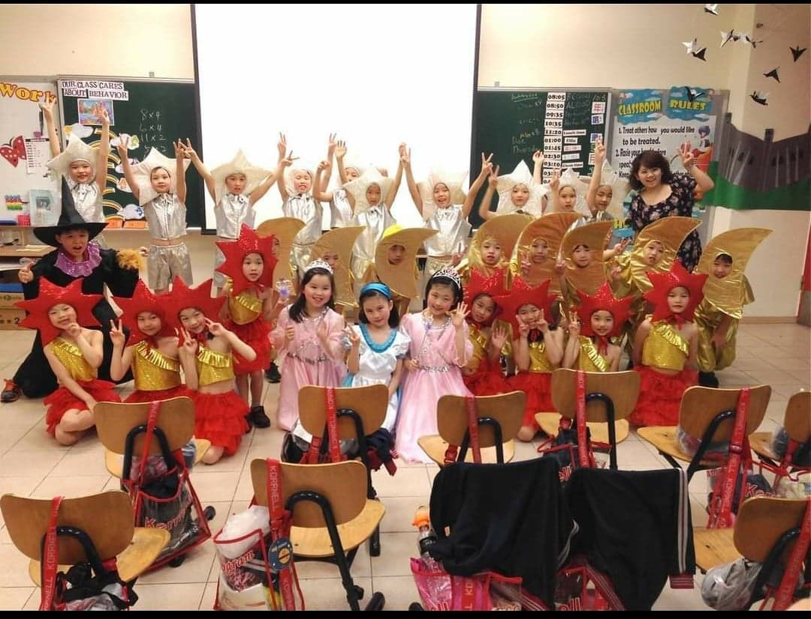
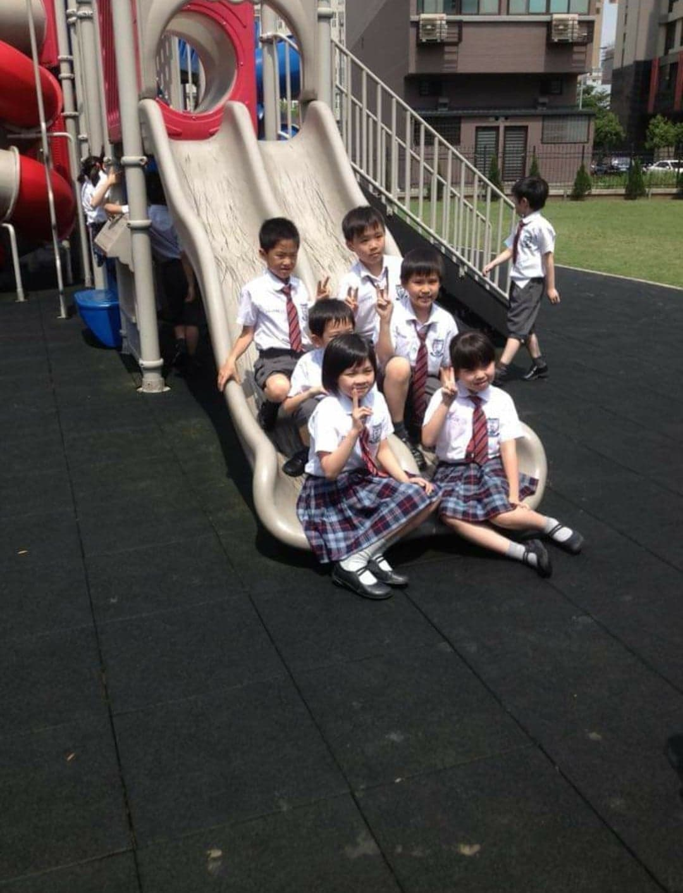
I came to PAS when I was in fifth grade, and I am still here now. I've been studying in PAS for 3 and almost 4 years. At first when I was still unfamiliar to the school, I was so nervous and dumbfonded. However, I've learned a lot because there is no Chinese class anymore. We need to speak English everytime, and that probably makes me become better at English. I also have many friends here in PAS. However, after we all go to high school, we have different classes. Thus, the only time we can get together and chat is lunch time. I think studying in PAS is fun but tired. Even though we end our classes at 3 pm, we still need to put a lot of efforts in our big projects and homeworks. Many of thema re time consuming, we really need to put a lot of time and strength to finish those projects. PAS is expensive and have more resources than other local schools, so I need to work even harder to make it worth!


| Categories | 1 | 2 | 3 | 4 | 5 |
| English Skills | |||||
| Math Skills | |||||
| Science Knowledge | |||||
| History Knowledge | |||||
| Art | |||||
| Debate Skills | |||||
| Research Skills | |||||
| Coding Skills | |||||
| Writing Skills |
| Categories | 1 | 2 | 3 | 4 | 5 |
| Creativity | |||||
| Leadership | |||||
| Social Intelligence | |||||
| Confidence | |||||
| Courage | |||||
| Justice | |||||
| Patience | |||||
| Discipline |